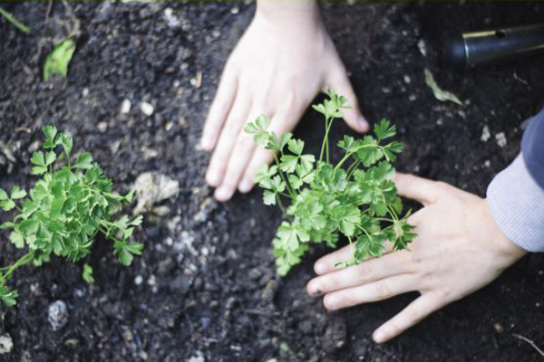

有机知识
Organic
knowledge
有机产品定义
有机产品是一种国际通称，是从英文Organic Food直译过来的。这里所说的“有机”不是化学上的概念。虽然不如绿色食品那样形象直观，但国外普遍接受 Organic Food （有机食品）这一叫法。也有一些国家称之为：天然食品、生态食品或生物食品。
回归自然保护环境
有机食品必须通过合法的有机食品认证机构的认证。
有机食品在生产和加工过程中必须严格遵循有机食品 生产采集、加工、包装、贮藏、运输标准，禁止 使用化学合成的农药、化肥、激素、抗生素、食 品添加剂等，禁止使用基因工程技术及该技 术的产物及其衍生物。
必须建立严格的质量管理体系、生产过程控制 体系和追踪体系，因此一般需要有转换期。
原料来自于有机农业生产体系或天然产品。
为什么选择有机蔬菜
见识过各种骇人听闻的食品安全问题之后，对食品健康有了更科学的认识之后，争取吃有机食品的人越来越多。
那么，吃有机食品到底有什么好处呢？
-
安全
不添加奇奇怪怪的东西
在有机生产的理念下，所有生产及加工处理过程中均不可使用化学制剂，也不使用任何基因改造产物及其衍生物。
安全
生态
-

生态
让作物自然长成
有机蔬菜的种植是以生态学理论为基础，在种植过程中以一套严密的程序，控制种植的每一个环节，使各种蔬菜的物种恢复到原生态下，保存其应有和原有的成份。
安全
生态
-
口感佳
能嚼出鲜活的韧劲
有机蔬菜吃起来清脆、有嚼劲，它给你感觉就是质密、新鲜，即使是烹调后，还是会有不一样的感觉。
口感佳
味美
-

味美
还原了食物本真的味道
有机农业提倡保持产品的天然成份，因此可保持食物的原来味道及原有的营养成分。
口感佳
味美
-

排毒
给身体来个大扫除
长期食用健康绿色食品，可以明显感觉免疫力增加，体质也会提升，这是体内毒素逐渐排除的正常现象。
排毒
减压
-
减压
身体清净了
一般的蔬菜里含有一些化学成分，但天然的有机蔬菜，没有农药和有毒的物质。
排毒
减压
-

动物相关疾病减少
尊重作物就是爱护自己
有机农业要求开放的动物饲养方式，爱护动物就是爱护自己，这可以令动物有空间伸展活动，增强动物的抵抗力，减低疾病散播机会。
动物相关疾病减少
不含转基因
-

不含转基因
这东西还是敬而远之吧
谁知道转基因食物到底有没有害处？听专家争论不休不如远离它，在有机生产的理念下，生产及加工处理过程中均不使用基因工程技术及其产物。
动物相关疾病减少
不含转基因